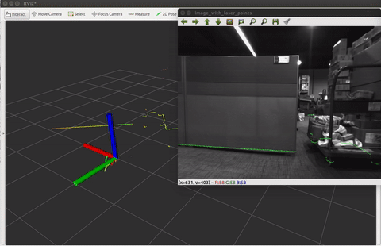
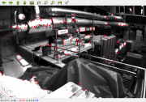
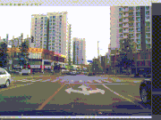
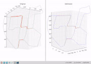
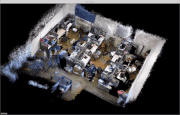
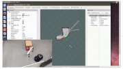

|
Shibo Zhao （赵世博）
Research Associate
|
Biography
I am currently a research associate at AIR lab, Robotics Institute, advised by Professor. Sebastian Scherer. Prior to that, I was supervised by Professor Zheng Fang and received my Master's degree from Northeastern University in 2019.
I am focusing on the simultaneous localization and mapping (SLAM) in some challenging environments. I am also interested in related topcis including multi-sensor fusion, deep learning.
Research Experience
|
 |
Thermal-Inertial Odometry for Subterranean Environments
Department: Robotics Institute Tasks: Perception in visually degraded envionments This project presents a thermal-inertial odometry pipeline that utilizes both deep learning network and visual-inertial framework. [video] |
|
 |
Laser-Inertial Odometry and Mapping for Large-Scale Highway Environments
Department: Tencent Autonomous Driving Lab Tasks: Localization and Mapping Shibo Zhao Zheng Fang, HaoLai Li, Sebastian Scherer IEEE/Intl. Conf. on Intelligent Robots and Systems, IROS, 2017, Oral [Paper] [Video] |
|
 |
Sparse Geometric Feature Enhanced Direct Depth SLAM System
Department: Robot Science and Engineer Institute Tasks: Perception in darkness Proposed a novel depth-only SLAM scheme that utilizes both dense range flow and sparse geometry features from depth images. [Paper] [Video] |
|
 |
A Real-time 3D Reconstruction System Based on Laser Scanner
Department: Robot Science and Engineer Institute Tasks: Localization and Mapping Investigated the principles of LOAM algorithm, including geometric feature extraction, feature matching, and pose estimation [Paper] [Video] |
|
 |
A Real-time Handheld 3D Temperature Field Model Reconstruction System
Department: Robot Science and Engineer Institute Tasks: Perception for rescue robots Utilized the traditional RGB-D odometry algorithm to add thermal intensity residuals and achieve the robust pose estimation [Paper] [Video] |
|
 |
A Real-time Localization and Perception System for Firefighters
Department: Robot Science and Engineer Institute Tasks: Perception for Firefighters Based on VINS algorithm, added the map reconstruction module to enable visualization. [Video] |
Experiences
- June. 2019 - Present Research Intern, CARNEGIE MELLON DARPA SUBTERRANEAN CHALLENGE TEAM, CMU USA
- June. 2018 - Oct. 2018 Research Intern, Tencent Autonomous Driving Lab, Tencent China
Awards and Honors
- Jun. 2019: Outstanding Research Scholarship, Northeastern University (1%)
- Jun. 2018: National Scholarship, The Chinese Ministry of Education (0.2%)
- Jun. 2017: First Prize Scholarship for Graduate Students, Northeastern University (5%)
- Jan. 2017: Second prize, “Challenge Cup” Academic Competition, The Chinese Ministry of Education (8%)
- Dec. 2016: First Prize Scholarship for Graduate Students, Northeastern University (5%)
- Oct. 2016: Principal Gold Medal, Northeastern University (3%) Shenyang, China
- May. 2016: Honorable Mention, American College Students Mathematical Modeling Competition (3%)
- May. 2016: Candidate, Outstanding National College Student (0.2%)
- May. 2016: National Scholarship, The Chinese Ministry of Education (0.2%)
- Dec. 2015: First Prize, National College Student Mathematical Modeling Competition (5%)